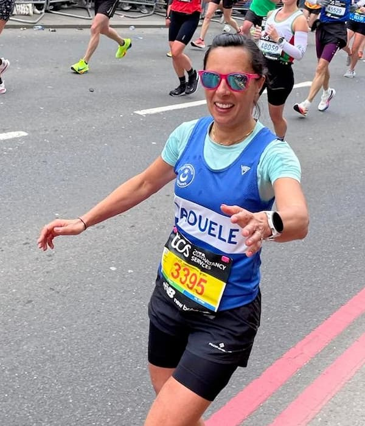
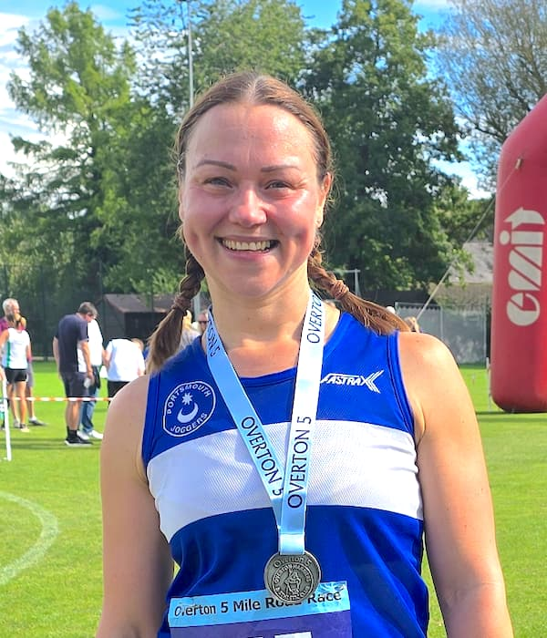

The Purbrook Ladies 5 is our ladies-only road race, organised by our Race Directors Rachel Thomas and Naouele McHugh. Starting out as a 6 mile race back in 1984, the race has inevitably changed over the years. It is now a 5 mile route that takes in the lovely lanes and countryside around Purbrook, and has a reputation for some fantastic post-race goodies (if we do say so ourselves!). The race is a firm favourite amongst the female running community and sells out very quickly every year.
2026 Race Information
- Race date
- TBD (June 2027)
- Entries open
- TBD
- Training starts
- TBD
- Latest updates
- See Facebook and Instagram, or email questions to ladies5@pjc.org.uk
Transferring your place
How to transfer your entry to someone else.
- Login to your Racesignup Account
- Login to Racesignup (by tapping Manage Entry or Enter Now).
- Scroll down to the "Your Entries" panel where you will see an orange Transfer button against your name. Tap that Transfer button.
- Provide the email address of the person who is taking your place.
- They will get an email with instructions on how to take up their place. You will get a copy of that email. Please note that you are responsible for any transaction between you and the person taking your place.
Taking up a transferred entry.
- When someone transfers their entry to you, you will receive an email with a transfer code.
- From this page, login to Racesignup (by tapping Manage Entry or Enter Now).
- If you don't yet have a Racesignup account you will be prompted to create one.
- Above the Sign Up panel you will see a green button: "I have a transfer code". Tap that button and enter your code.
- If your code is validated, tap on your name in the Sign Up panel and complete the entry form.
- You will get an email confirming that your entry has been made.
2026 RD's Race Report
Oh wow... what a morning 💙
You ladies are absolutely awesome, inspiring and downright smashed that.
The weather was kind to us once again. No rain, near-perfect running conditions and, despite the infamous puddle making an appearance, you all took everything in your stride and brought this race home with smiles on your faces.
You should be incredibly proud of yourselves. We are certainly proud of every single one of you.
We honestly can't say it enough, you ladies are amazing.
A huge shout out must go to our fantastic Marshals and volunteers, headed up by our wonderful Head Marshal, Birch
From the encouragement on the course, the early starts, the setting up, the clearing away and everything in between, you all help make this race what it is.
Another big shout out to Big G on lead bike, who even found himself walking through the puddle while catching up with our lead lady! 🚴♂️💦
And of course our amazing tail walkers, Eileen and Katie, who made sure everyone got around safely and with support right to the very end.
This race is only as good as the support we get from each and every one of you, and you make sure this race is a success.
To our runners, volunteers, marshals, sponsors, supporters and everyone cheering from the sidelines - thank you. You are what makes this race special and we are incredibly grateful for the privilege of putting it on.
We would also like to say a massive thank you to everyone who has donated to our JustGiving Page. We have raised over £1,000 so far, which is absolutely incredible! Donations are still very welcome and every penny is hugely appreciated.
We've had a few questions about photographs. The photographers you saw around the course were actually marshals. If they share any photos with us, we will of course share them with you.
Steve was also at the finish trying to capture finish line photos. Unfortunately, he may not have managed to get everyone as the finish area became quite busy, but we'll share any photos we receive.
We will also be uploading the presentation photos and finish line pictures once we've sorted through them all, so keep an eye on the page over the next few days.
For now, put your feet up, enjoy the rest of your Sunday and reflect on what you've achieved today.
You have all been absolutely brilliant.
And as for us... it's time for a well-earned Gin for Rachel, a Pimms for Naouele and a Guinness for Birch! 🍸🍹🍺
Much love
Rachel, Naouele and Birch
💙💙💙
Just after the start in 2024

Naouele has been a Jogger for over 15 years. She has enjoyed training for marathons and representing us at lots of local races. She and Rachel became race directors for the Purbrook Ladies 5 in 2018 and love putting on the race for the ladies in the local running community.

Rachel started with PJC back in 2017 when she completed her first Purbrook Ladies 5 (finishing 5th) and was hooked by the support of the Joggers. The following year, she became one-half of the PL5 Race Directorship and is still RDing today. Rachel has also completed a number of marathons and ultra-marathons.